Raincloud Plots in VISTA
VISTA Development Team
VISTA-raincloud.RmdOverview
Raincloud plots combine three visual layers:
- distribution shape (half-violin),
- robust summary (boxplot), and
- individual observations (jittered points).
This vignette shows raincloud plotting for both expression and
fold-change data in VISTA, including line-connection control with
id.long.var and optional statistical annotations.
Create a VISTA object
library(VISTA)
library(ggplot2)
data("count_data", package = "VISTA")
data("sample_metadata", package = "VISTA")
# Keep runtime modest for vignette rendering
count_small <- count_data[1:1000, ]
vista <- create_vista(
counts = count_small,
sample_info = sample_metadata,
column_geneid = "gene_id",
group_column = "cond_long",
group_numerator = "treatment1",
group_denominator = "control",
method = "deseq2",
min_counts = 10,
min_replicates = 1
)
comp_names <- names(comparisons(vista))
top_up <- get_genes_by_regulation(
vista,
sample_comparisons = comp_names[1],
regulation = "Up"
)
n_select_genes = 50
selected_genes <- stats::na.omit(utils::head(top_up$gene_id, n_select_genes))
if (!length(selected_genes)) {
selected_genes <- rownames(vista)[1:n_select_genes]
}Expression Raincloud
Basic expression raincloud (pooled gene-sample values)
get_expression_raincloud(
vista,
genes = selected_genes[1:10],
value_transform = "log2",
summarise = FALSE,
facet_by = "none"
)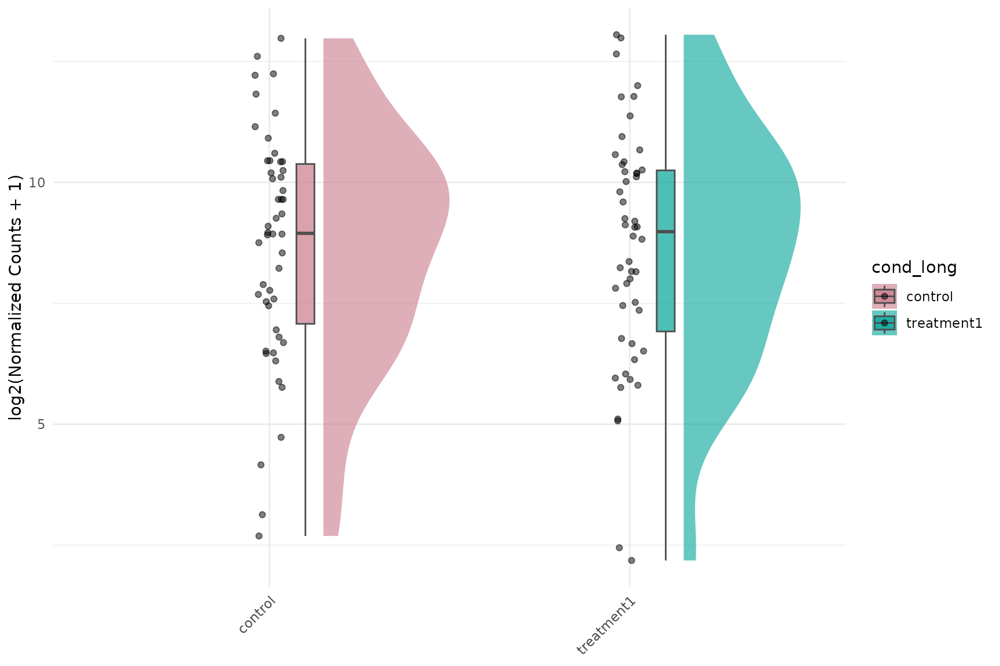
summarise = FALSE vs summarise = TRUE
For expression rainclouds:
-
summarise = FALSE: each point is a gene-sample value (pooled across selected genes). -
summarise = TRUE: each point is a gene-level group summary (one value per gene per group).
With summarise = TRUE, using
id.long.var = "gene" is useful for connecting each gene
across groups.
get_expression_raincloud(
vista,
genes = selected_genes[1:10],
value_transform = "log2",
summarise = FALSE,
facet_by = "none",
id.long.var = "gene"
)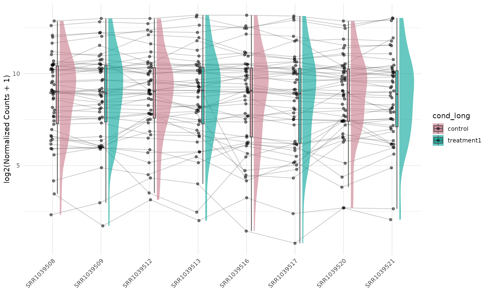
get_expression_raincloud(
vista,
genes = selected_genes[1:10],
value_transform = "log2",
summarise = TRUE,
facet_by = "none",
id.long.var = "gene"
)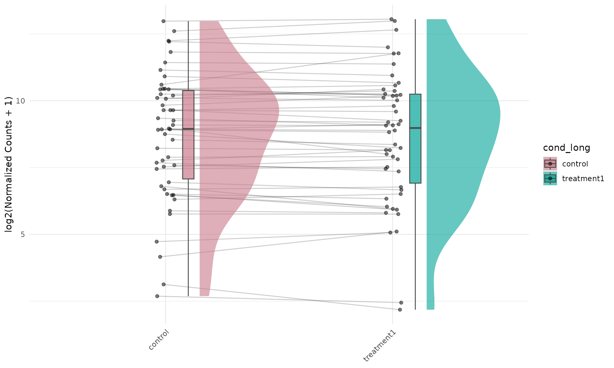
Expression raincloud with lines and p-values
get_expression_raincloud(
vista,
genes = selected_genes[1:10],
value_transform = "log2",
summarise = TRUE,
facet_by = "none",
id.long.var = "gene",
stats_group = TRUE,
stats_method = "wilcox.test",
p.label = "p.format"
)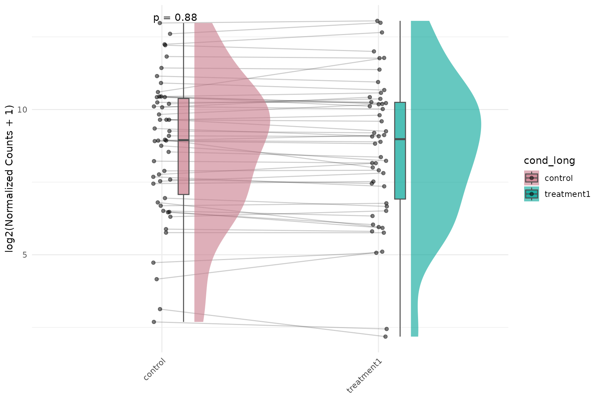
Label dots by gene ID (facet_by = "none")
get_expression_raincloud(
vista,
genes = selected_genes[1:10],
value_transform = "log2",
summarise = TRUE,
facet_by = "none",
label = TRUE,
label_column = "gene",
label_size = 3
)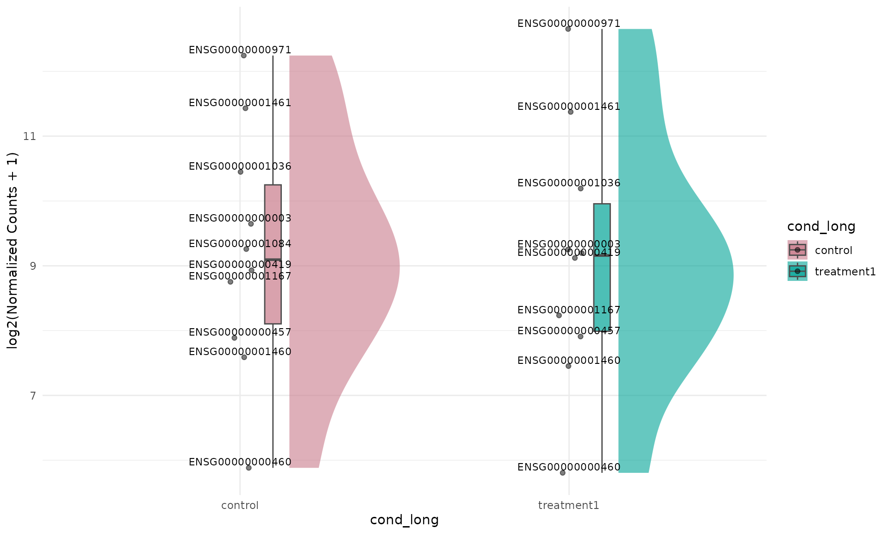
If your object has symbol annotations in rowData(vista)
(or you provide display_from/display_orgdb),
you can label directly in symbol space:
get_expression_raincloud(
vista,
genes = c("NFKBIA", "KLF6", "PER1"),
value_transform = "log2",
summarise = TRUE,
facet_by = "none",
label = TRUE,
display_id = "SYMBOL"
)When facet_by = "gene", prefer
summarise = FALSE so each facet retains replicate-level
distribution. With summarise = TRUE, each facet has only
group-level summaries and the raincloud shape is usually not
informative.
get_expression_raincloud(
vista,
genes = selected_genes[1:2],
value_transform = "log2",
summarise = FALSE,
facet_by = "gene",
label = TRUE,
label_column = "gene",
label_size = 2.8
)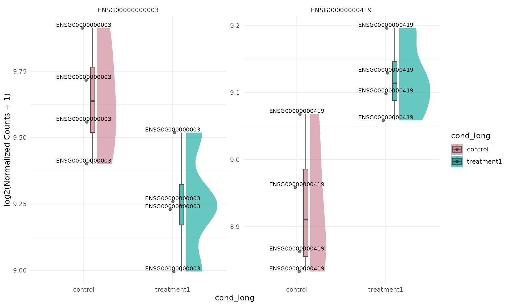
Flipped expression raincloud
Raincloud plots can be visually emphasized in a horizontal layout by
combining a left-side raincloud with coord_flip().
get_expression_raincloud(
vista,
genes = selected_genes[1:10],
value_transform = "log2",
summarise = TRUE,
facet_by = "none",
rain_side = "r",
id.long.var = "gene"
) +
ggplot2::coord_flip()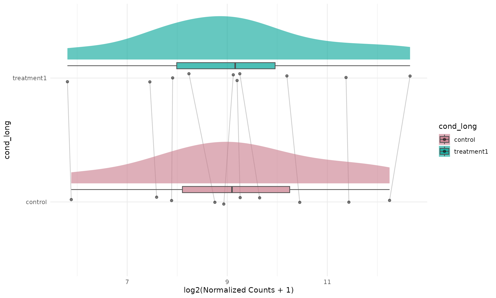
Fold-Change Raincloud
Basic fold-change raincloud
get_foldchange_raincloud(
vista,
sample_comparisons = comp_names,
facet_by = "auto"
)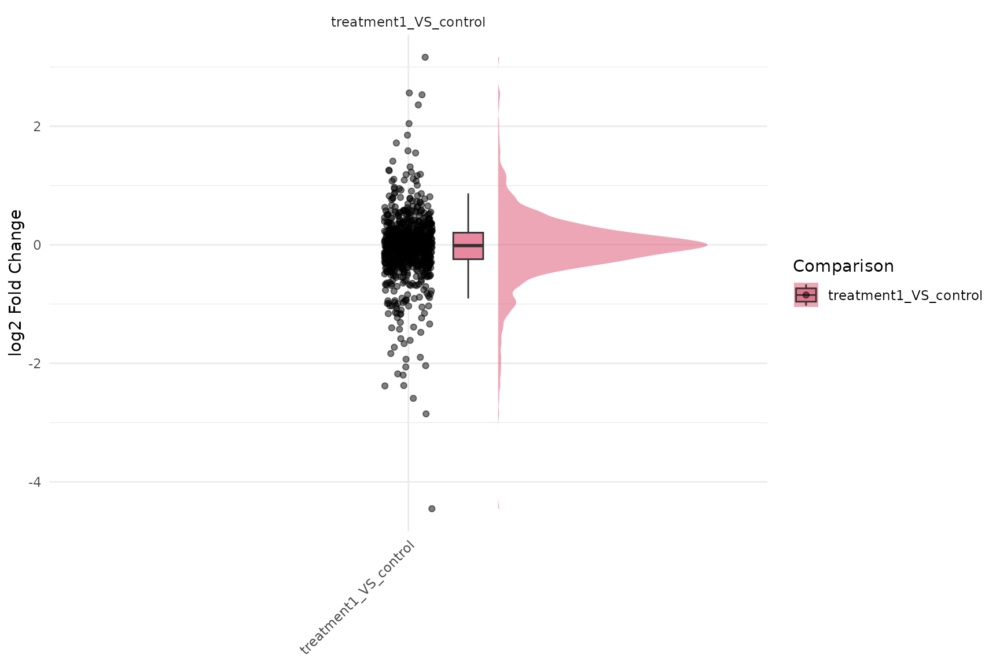
Fold-change raincloud with gene trajectories and p-values
get_foldchange_raincloud(
vista,
sample_comparisons = comp_names,
facet_by = "none",
id.long.var = "gene_id",
stats_group = TRUE,
stats_method = "t.test"
)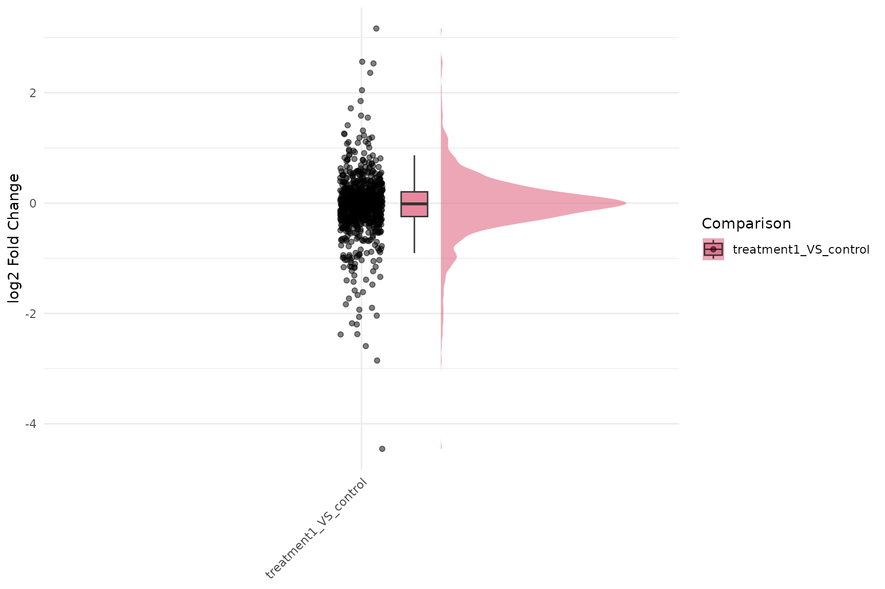
Label dots by gene ID for fold-change raincloud
get_foldchange_raincloud(
vista,
sample_comparisons = comp_names,
facet_by = "none",
label = TRUE,
label_column = "gene_id",
label_size = 2.8
)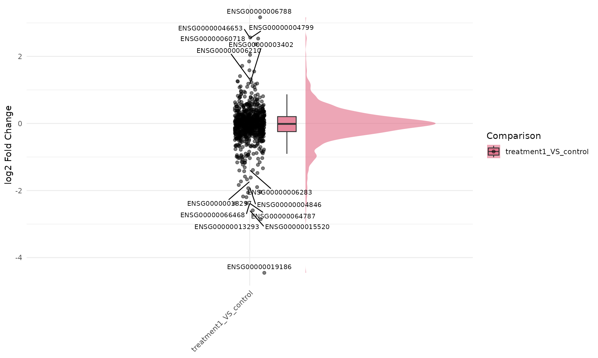
get_foldchange_raincloud(
vista,
genes = c("NFKBIA", "KLF6", "PER1"),
sample_comparisons = comp_names,
facet_by = "none",
label = TRUE,
display_id = "SYMBOL"
)Flipped fold-change raincloud
get_foldchange_raincloud(
vista,
sample_comparisons = comp_names,
facet_by = "none",
rain_side = "r",
id.long.var = "gene_id"
) +
ggplot2::coord_flip()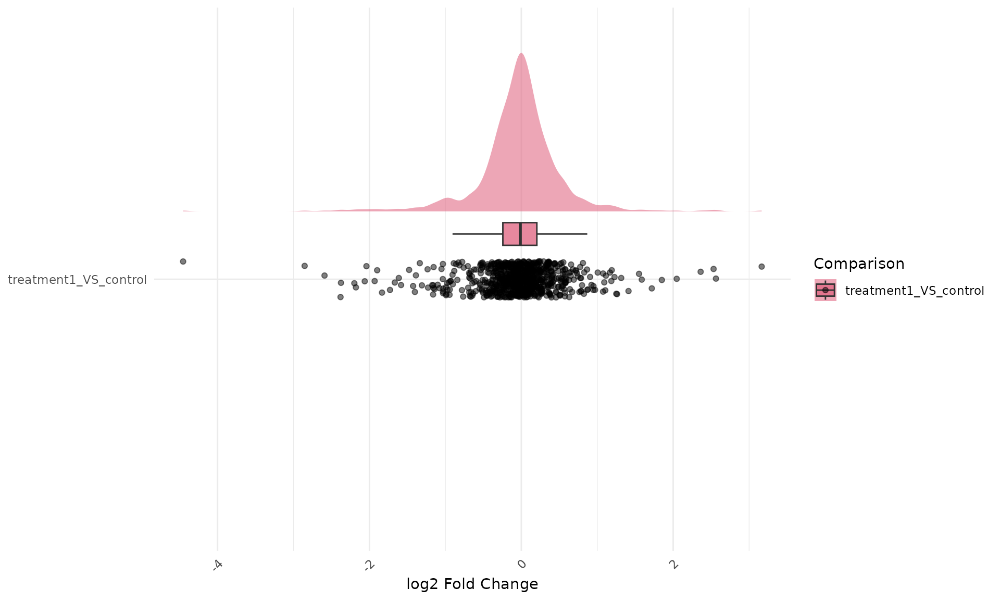
Why this is harder outside VISTA
Outside VISTA, producing equivalent raincloud plots is more involved because you must manually:
- extract and harmonize DE tables per comparison,
- reshape to long format for plotting,
- track grouping and palette consistency,
- map repeated-measure identifiers for line connections, and
- add and control statistical annotations per plotting context.
A minimal non-VISTA workflow typically requires custom wrangling and multiple plot-specific settings:
# 1) Build long expression/fold-change tables manually
# 2) Join sample metadata and comparison metadata
# 3) Validate IDs for repeated measures (id.long.var)
# 4) Create raincloud layers and palette mapping
# 5) Add statistical comparisons and label formatting
# 6) Repeat the process for each analysis object/comparison setIn VISTA, these steps are encapsulated in
get_expression_raincloud() and
get_foldchange_raincloud() while staying consistent with
the rest of the plotting API.
Session information
sessionInfo()
#> R version 4.5.3 (2026-03-11)
#> Platform: x86_64-pc-linux-gnu
#> Running under: Ubuntu 24.04.4 LTS
#>
#> Matrix products: default
#> BLAS: /usr/lib/x86_64-linux-gnu/openblas-pthread/libblas.so.3
#> LAPACK: /usr/lib/x86_64-linux-gnu/openblas-pthread/libopenblasp-r0.3.26.so; LAPACK version 3.12.0
#>
#> locale:
#> [1] LC_CTYPE=C.UTF-8 LC_NUMERIC=C LC_TIME=C.UTF-8
#> [4] LC_COLLATE=C.UTF-8 LC_MONETARY=C.UTF-8 LC_MESSAGES=C.UTF-8
#> [7] LC_PAPER=C.UTF-8 LC_NAME=C LC_ADDRESS=C
#> [10] LC_TELEPHONE=C LC_MEASUREMENT=C.UTF-8 LC_IDENTIFICATION=C
#>
#> time zone: UTC
#> tzcode source: system (glibc)
#>
#> attached base packages:
#> [1] stats graphics grDevices utils datasets methods base
#>
#> other attached packages:
#> [1] ggplot2_4.0.2 VISTA_0.99.2 BiocStyle_2.38.0
#>
#> loaded via a namespace (and not attached):
#> [1] RColorBrewer_1.1-3 ggrain_0.1.2
#> [3] jsonlite_2.0.0 tidydr_0.0.6
#> [5] magrittr_2.0.4 ggtangle_0.1.1
#> [7] farver_2.1.2 rmarkdown_2.31
#> [9] fs_2.0.1 ragg_1.5.2
#> [11] vctrs_0.7.2 memoise_2.0.1
#> [13] ggtree_4.0.5 rstatix_0.7.3
#> [15] htmltools_0.5.9 S4Arrays_1.10.1
#> [17] polynom_1.4-1 curl_7.0.0
#> [19] broom_1.0.12 Formula_1.2-5
#> [21] SparseArray_1.10.9 gridGraphics_0.5-1
#> [23] sass_0.4.10 bslib_0.10.0
#> [25] htmlwidgets_1.6.4 desc_1.4.3
#> [27] plyr_1.8.9 cachem_1.1.0
#> [29] igraph_2.2.2 lifecycle_1.0.5
#> [31] pkgconfig_2.0.3 gson_0.1.0
#> [33] Matrix_1.7-4 R6_2.6.1
#> [35] fastmap_1.2.0 MatrixGenerics_1.22.0
#> [37] digest_0.6.39 aplot_0.2.9
#> [39] enrichplot_1.30.5 colorspace_2.1-2
#> [41] ggnewscale_0.5.2 GGally_2.4.0
#> [43] patchwork_1.3.2 AnnotationDbi_1.72.0
#> [45] S4Vectors_0.48.0 DESeq2_1.50.2
#> [47] textshaping_1.0.5 GenomicRanges_1.62.1
#> [49] RSQLite_2.4.6 ggpubr_0.6.3
#> [51] labeling_0.4.3 polyclip_1.10-7
#> [53] httr_1.4.8 abind_1.4-8
#> [55] compiler_4.5.3 withr_3.0.2
#> [57] fontquiver_0.2.1 bit64_4.6.0-1
#> [59] backports_1.5.0 S7_0.2.1
#> [61] BiocParallel_1.44.0 carData_3.0-6
#> [63] DBI_1.3.0 ggstats_0.13.0
#> [65] ggforce_0.5.0 R.utils_2.13.0
#> [67] ggsignif_0.6.4 MASS_7.3-65
#> [69] rappdirs_0.3.4 DelayedArray_0.36.0
#> [71] ggpp_0.6.0 tools_4.5.3
#> [73] otel_0.2.0 scatterpie_0.2.6
#> [75] ape_5.8-1 msigdbr_26.1.0
#> [77] R.oo_1.27.1 glue_1.8.0
#> [79] nlme_3.1-168 GOSemSim_2.36.0
#> [81] grid_4.5.3 cluster_2.1.8.2
#> [83] reshape2_1.4.5 fgsea_1.36.2
#> [85] generics_0.1.4 gtable_0.3.6
#> [87] R.methodsS3_1.8.2 tidyr_1.3.2
#> [89] data.table_1.18.2.1 car_3.1-5
#> [91] XVector_0.50.0 BiocGenerics_0.56.0
#> [93] ggrepel_0.9.8 pillar_1.11.1
#> [95] stringr_1.6.0 limma_3.66.0
#> [97] yulab.utils_0.2.4 babelgene_22.9
#> [99] splines_4.5.3 tweenr_2.0.3
#> [101] dplyr_1.2.0 treeio_1.34.0
#> [103] lattice_0.22-9 bit_4.6.0
#> [105] tidyselect_1.2.1 fontLiberation_0.1.0
#> [107] GO.db_3.22.0 locfit_1.5-9.12
#> [109] Biostrings_2.78.0 knitr_1.51
#> [111] fontBitstreamVera_0.1.1 bookdown_0.46
#> [113] IRanges_2.44.0 Seqinfo_1.0.0
#> [115] edgeR_4.8.2 SummarizedExperiment_1.40.0
#> [117] stats4_4.5.3 xfun_0.57
#> [119] Biobase_2.70.0 statmod_1.5.1
#> [121] matrixStats_1.5.0 stringi_1.8.7
#> [123] lazyeval_0.2.2 ggfun_0.2.0
#> [125] yaml_2.3.12 evaluate_1.0.5
#> [127] codetools_0.2-20 gdtools_0.5.0
#> [129] tibble_3.3.1 qvalue_2.42.0
#> [131] BiocManager_1.30.27 ggplotify_0.1.3
#> [133] cli_3.6.5 systemfonts_1.3.2
#> [135] jquerylib_0.1.4 Rcpp_1.1.1
#> [137] png_0.1-9 parallel_4.5.3
#> [139] pkgdown_2.2.0 assertthat_0.2.1
#> [141] blob_1.3.0 clusterProfiler_4.18.4
#> [143] DOSE_4.4.0 tidytree_0.4.7
#> [145] ggiraph_0.9.6 scales_1.4.0
#> [147] purrr_1.2.1 crayon_1.5.3
#> [149] rlang_1.1.7 cowplot_1.2.0
#> [151] fastmatch_1.1-8 KEGGREST_1.50.0